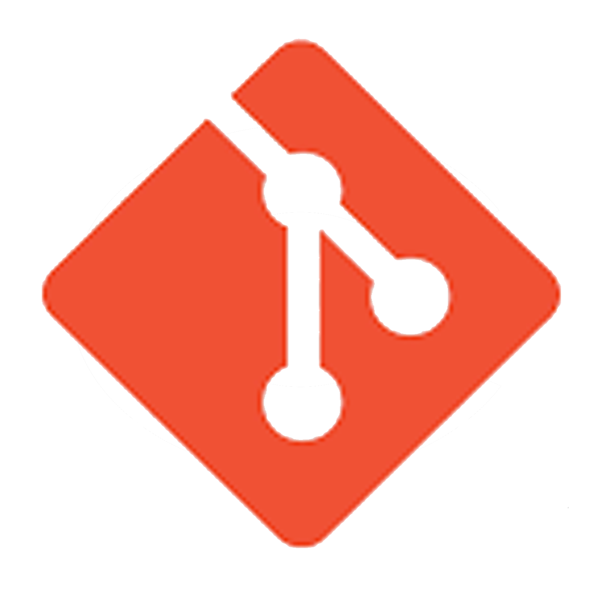

Skills
JAVA
DELPHI

ANDROID

C
PHP

Meu nome é Maurício Baron, tenho 44 anos, moro em Jundiaí-SP e estudo tecnologia desde 2006, conclui o curso superior de Ciências da Computação no ano de 2012 na faculdade Faccamp. Realizei um estágio na área de suporte técnico na prefeitura de Várzea Paulista, onde adquiri conhecimento em manutenção de computadores, instalação de sistemas e suporte em diversos softwares livres. Também trabalhei na área de suporte em outra empresa de software. Atualmente estou trabalhando como técnico em eletrônica, realizando reparos em equipamentos industriais. Atualmente estou aprimorando os meus estudos em novas tecnologias, através de cursos, livros e documentações na internet. Desde então, venho dedicando boa parte do meu dia ao aprendizado de Desenvolvimento em Java, C e outras linguagens para sistema embarcado.
Aqui neste portifólio você encontrará alguns projetos simples que venho desenvolvendo através de meus estudos e pesquisas.
Um simples jogo de plataforma em Java para estudos
Jogo Pon feito em Java
Workshop-Javafx-Jdbc
Firmware feito em C e com o Proteus
Firmware feito em C e com o Proteus
Firmware feito em C e com o Proteus
Projeto em Desenvolvimento.